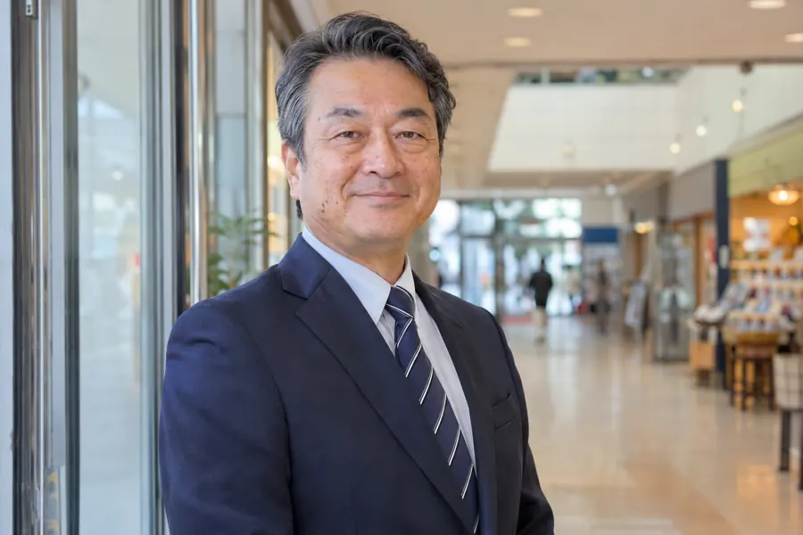
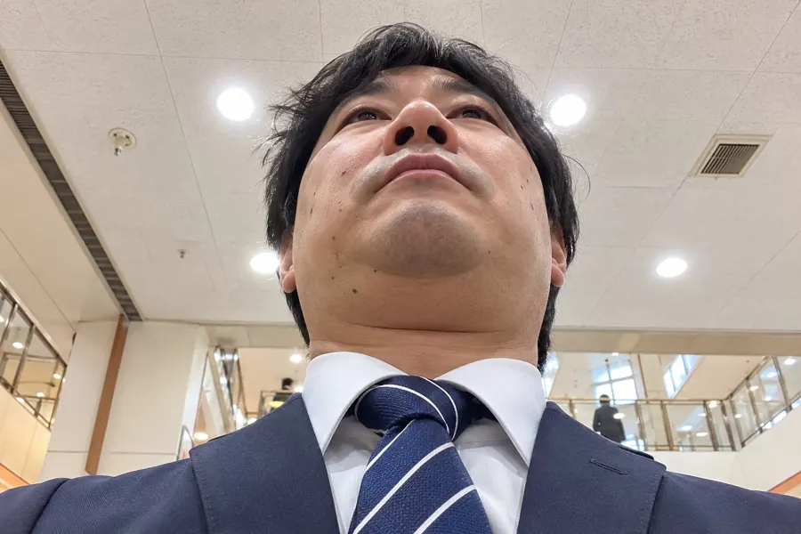

決まれば、契約書を仕上げて送れます
押すと「済」。下の欄に決まったことを書きます。スマホとパソコンで同じ内容になります。
必ず決めるLINEで質問中先生の回答待ち見せて決める
QR
現在地QRを貼る場所吉田様に番号で選んでいただき、押して緑に。スマホとパソコンで同じになります
11月21日（土）13:30〜 写真の撮影
★から先に。1つのものを横で2枚・縦で1枚。使う場所が分かると、構図に迷いません。
横縦寄り★ 先に
写さない物
- お客さんの顔（後ろ姿・遠くで誰か分からないなら可）
- 子ども（託児所・ゲームセンターは特に）
- 車のナンバー
- ATM・レジの画面、伝票や名前の書いた紙
- キャラクター商品・ほかの会社のポスターだけを大きく
大事な3つ
- スマホをまっすぐ立てる（見上げない。自分が下がる）
- 横で2枚・縦で1枚（HPは横、Instagramは縦）
- 迷ったら撮っておく（載せるかは後で吉田様と決める）
社
社長のお写真会社案内のページ用。13:30 のごあいさつの後、最初に撮る

 ✕ 照明の真下
✕ 照明の真下目の下に影ができ、疲れた顔に

✕ 下から見上げるあごが大きく、天井が写る
見本のポイント
- 顔を明るい方へ：入口や窓の光が顔に当たる向きに立っていただく
- 目の高さで撮る：スマホを社長の目の高さに。目が上の3等分の線あたりに来るように
- 腰から上：体は少し斜め、顔はこちら。手は軽く前で組むか、自然に下ろす
- 背景に看板・お店が少しぼけて入る：「モールの社長」と伝わる
撮り方
- ポートレートモードで撮る（背景が自然にぼけます）。2mほど離れて、はみ出すなら少し下がる
- 場所は入口の中か、館内の明るい通路。人通りが少ない所で
- 表情は2種類：口を閉じた笑顔／少し歯が見える笑顔
- 横・縦それぞれ10枚ほど続けて撮る（まばたき・固い表情は後で外す）
- ネクタイ・襟・髪の乱れを、撮る前にひとこと確認
声かけ
「何枚か続けて撮りますね。最初は緊張して当然なので、後ろの写真ほど良くなります」
店
お店ごと撮影可と言われたお店だけ。店の前（看板）・店の中・商品2〜3つ
最初のひとこと
「こんにちは。モールのホームページを作っております、大久保と申します。今日は吉田さんと一緒に、館内の写真を撮らせていただいています。お店の看板と、店内を少し撮らせていただいてもよろしいでしょうか。お客さまのお顔は写しません。店員さんも、写りたくなければよけて撮りますね」
- 吉田様が隣にいるときは、先に吉田様からひとこと紹介していただくと早い
- 断られたら「承知しました、ありがとうございます」で終わり。看板だけ外から撮る
- 撮り終えたら「ありがとうございました」
時
当日の回り方目安2時間半。11月の五島は16時半ごろから暗くなります
時刻を押すと、その時間にすることが開きます。見本の写真は上の各項目にあります。
13:30吉田様にごあいさつ・確かめる5つ
- 撮ってよいお店「今日、中を撮ってよいお店はどこでしょうか」（Leon・VITA は許可済み）。下の「お店ごと」の表の「撮影可」に印
- 社長のお写真「最初に撮らせていただけますか」→ 上の「社長のお写真」のとおりに撮る
- 写ってよい店員さん「写りたくない方は、よけて撮ります」
- 現在地QRの場所「貼るならどの辺りがよいでしょうか」。決めるのは23日。今日は候補①〜⑪の壁を撮るだけ
- 写ってしまったお客さん「小さく写った方は、あとで消すか、ぼかします」とひとこと
13:45A 建物の外（30分・明るいうちに）
- ★ 正面の全体（横2・縦1）道の向こうまで下がる。空を上3分の1。17e は 0.5× が無いので、入りきらなければ横で左端・真ん中・右端の3枚（あとでつなぐ）
- 空と建物だけ（横）同じ場所でスマホを少し上へ。建物は画面の下半分
- ななめ45度（横）建物の角を画面の左3分の1の線に
- ★ 看板（寄り）真ん前に立ち、文字がまっすぐ読めるように。見上げすぎない
- ★ 入口・自動ドア（横・縦）中央玄関（タクシー乗り場の側）を真正面から。人が通らない瞬間に
- バス停・タクシー乗り場（横）中央玄関の右側。バス停の看板の文字が読めるように
- 駐車場の広さ（横）屋上か2階の窓から見下ろす。館内で回るときでもよい。ナンバーが読めない距離
- 太陽を背中に。逆光で暗い面は16:00に撮り直し。グリッドの縦線を柱に合わせる
14:151階の館内（20分）→ 1階のお店（25分）
- ★ 1階の通路（横・縦）まん中に立ち奥まで。人がいない瞬間か、後ろ姿だけの瞬間
- ポスター用の通路（縦・場所を変えて10枚ほど）ポスター案2のスマホ画面用。人はお店をのぞく後ろ姿だけ
- 案内所（横）上の表示が読めるように
- エスカレーター・エレベーター（横）少し斜めから両方入れる
- 休憩所（横）ピーパラダイスの前。まわりのお店も少し入れる
- トイレの入口（横）表示だけ。中は撮らない
- 催事場（横・縦）何もない状態で。催し中なら売り場の方にひとこと
- フロア案内板（寄り）正面から、文字が読めるように
- 現在地QRの候補①〜⑦（横）先に指で番号を見せた写真を1枚 → 貼る壁を少し引いて（高さが分かるように）
- 季節の飾り（寄り）クリスマスの飾りがあれば
- 1階のお店（飲食は14時以降が空いている）撮影可のお店だけ。「最初のひとこと」を言ってから、店の前（看板を正面）・店の中（お客さんのいない方向）・商品2〜3個（寄り・少し斜め・画面いっぱい）。麺・たこ焼きは湯気のあるうちに
- 子どもは写さない（たこ焼き・ゲームの近くは特に）。ATM・レジの画面も。文字を読ませたい物は正面から
15:002階の館内（15分）→ 2階のお店（25分）
- 2階の通路（横）まん中に立ち奥まで。エスカレーターの手すりが少し入るとよい
- エスカレーター・エレベーター（横）2階の側から
- 休憩所（横）ファンタジーランドとパレットの間。まわりのお店も少し入れる
- 授乳室・ベビーカー置き場の入口（横）2階 南側の男子トイレの横。表示だけ。中は撮らない
- 現在地QRの候補⑧〜⑩（横）指で番号 → 壁
- 駐車場の広さ（横）外で撮れていなければ、2階の窓から
- 2階のお店 撮影可のお店だけ。服（パレット・SpRay など）はハンガーの並びを斜めから。めがね（ヨネザワ）は棚を寄りで。おもちゃ（おやこパンダ）・本は棚いっぱいに
- 雨の日の特集（横）ゲームセンター（ファンタジーランド）・リトルシアター。子どもがいない時に。いれば機械だけを寄りで
- 美容・もみほぐし（横）お客さんがいない時に。椅子や道具だけでも
- 託児所（シティハウス）（横）看板と受付だけ。中と子どもは撮らない
- 2階は子どもが多い所（託児所・ゲーム・おもちゃ）。撮る前に画面の中に子どもがいないか必ず見る
15:403階 → C・D の残り
16:00★の撮りもれ確認。外がまだ明るければ、外をもう1度
聞かれそうなことと、答え方
契約書（第12稿）と、これまでのやりとりから作りました。数字は契約書の文と同じです。迷ったら「確かめて、LINEでお返事します」で大丈夫です。